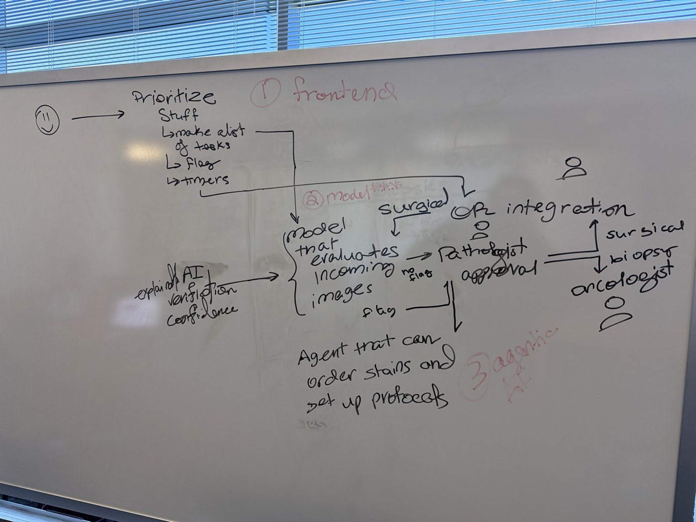

Sepia
An AI-prioritized pathology worklist with explainable, confidence-aware case reads.
A pathologist opens one worklist fed by two lanes. Frozen sections from the operating room always come first, with a running timer. Biopsies are sorted by risk and confidence, and flagged cases arrive with follow-up orders already drafted. The model suggests. The pathologist decides, and nothing is ordered without their approval.
StatusThis is the build plan. No results yet. Metrics will be added from cached test-split runs only.
Two lanes into one worklist
Frozen sections from the OR
Always top priority, with a running timer. The model reads the sample, says whether tumor appears at a margin, and reports how reliable its read is. The pathologist makes the call, and the surgeon gets one of three answers.
- Margins clear
- Tumor at a named margin
- Cannot determine, defer to permanent
Simulated this weekend. No frozen-section data is provided.
Risk, reasons and confidence
The model estimates risk, explains why using named histologic criteria, and attaches a calibrated confidence. Cases are flagged if likely aggressive or low confidence.
For flagged cases, an agent drafts follow-up orders (stains, recuts, new-sample requests) before the pathologist opens the case. The pathologist can order the drafted tests, take a closer look first, or dismiss the flag.
Nothing is ordered until the pathologist approves. The signed-out result goes to the oncologist.
Priority tiers
- 1Surgical frozen sections. The timer is running.
- 2Likely aggressive. Includes any case whose conformal prediction set contains the aggressive class, even when it isn't the top prediction.
- 3Low confidence. The conformal set holds more than one class, or the reliability flag is raised.
- 4Unflagged. Read in arrival order.
Safety rule. If the aggressive class is anywhere in a case's conformal prediction set, the case is tier 2 even if it is not the top prediction.
Within a tier, cases sort by risk score (highest first), then by arrival time.
How a case moves through Sepia

Where it started: the team whiteboard from Saturday morning. Sepia keeps its spine (worklist, model, agent, pathologist, surgeon, oncologist) and adds tiers, conformal confidence and grounded explanations.
Every conclusion shows four things
Why
Contributions of named criteria, such as nuclear pleomorphism, invasion into stroma, gland formation, lymphocytic infiltrate and necrosis. Each is linked to the image regions that drove it.
Where
Tile-level heatmaps for each criterion.
Compared to what
Similar reference cases, including the nearest case with a different label.
How sure
A calibrated probability, a conformal prediction set, and agreement signals: CONCH vs MUSK, nearest-neighbor label agreement, and prompt-ensemble spread.
Grounded summary
- An LLM writes the summary only from structured findings. It never sees the image.
- Every sentence must cite finding IDs, or it is dropped. At most four sentences, no numbers that aren't in the cited findings, and no diagnosis stated as fact.
- If fewer than two sentences survive the validator, a deterministic template writes the summary instead.
- Summaries are generated once, offline, and cached. The live demo makes no LLM calls by default.
Concepts are shown as "features associated with" higher or lower risk. They are never claimed as biological causes.
An offline pipeline on Delta, a demo app on a laptop
- 00Inventory the shared datasets
- 01Build cases and tiles
- 02Embed tiles (hosted /embed or own job)
- 03Encode prompts (GPU or CPU job)
- 04Concept scores
- 05Risk model, calibration, conformal
- 06Reliability and out-of-distribution
- 07Retrieval
- 08Case JSON and cached summaries (Lumen)
artifacts/(JSON and thumbnails) is copied off Delta by scp or OnDemand.- A simulator replays cases into FastAPI and SQLite, which serve the React worklist and case views.
- The agent (rules, plus optional Lumen) drafts orders. The pathologist's decision routes results to the surgeon screen or the oncologist inbox.
- The app never depends on the hosted servers, which stop Sunday 6 PM, or on GPU availability.
Repository layout
pathqueue/
Plan.md
README.md # how to run pipeline + app; credits/citations
.gitignore # artifacts/, data/, *.csv, *.npy, .env, logs/
.env.example # LUMEN_API_KEY=, CONCH_ENDPOINT=, CONCH_KEY=, MUSK_ENDPOINT=, MUSK_KEY=
config/
settings.yaml # paths, dataset choice, tile size, alpha, tier thresholds
concepts.yaml # criterion prompt bank (positive + negative phrasings)
stain_rules.yaml # suspected finding -> drafted orders (illustrative, needs clinical review)
pipeline/ # runs on Delta
common.py # config loading, paths, hosted-server client w/ batching+retry+resume
00_inventory.py
01_build_cases.py
02_embed_tiles.py
03_encode_prompts.py
04_concepts.py
05_risk_model.py
06_reliability.py
07_retrieval.py
08_build_case_json.py
jobs/
encode_prompts.sbatch
embed_tiles.sbatch # fallback if hosted server is slow/down
eval/
metrics.py # AUROC, ECE, reliability diagram, conformal coverage, concept AUROC
queue_sim.py # FIFO vs Sepia waiting-time simulation
deletion_test.py # explanation faithfulness
agent/
rules.py # deterministic rule engine over stain_rules.yaml
agent.py # Lumen tool-calling wrapper (optional) with rules fallback
lumen.py # OpenAI-compatible client, caching, retries
backend/
app.py # FastAPI
db.py # SQLite: cases, decisions, orders, routed_results
simulator.py # replays cases as live arrivals
summary.py # grounded-summary validator + template fallback
frontend/ # Vite + React + TypeScript + Tailwind
artifacts/ # git-ignored; produced by pipeline, consumed by app
cases/<case_id>.json
images/<case_id>.jpg # downscaled display image
reference_index.json
eval/ # metrics JSON + plots for the Metrics page
tests/
Event compute rules we never break
From ncsa/ashby-hackathon-2026. We reuse its client.py, models.py, run_embeddings.py, submit.sbatch and train_probe.py instead of rewriting them.
Cluster and jobs
- NCSA Delta. Accounts
bfqi-delta-gpuandbfqi-delta-cpu. - Never run model inference on the login node. Use
srunorsbatch. - One GPU per team at a time. 10 GPU-hours per person. At most 16 CPUs and ~62 GB per GPU. Interactive partitions cost double.
- Reserved A100 blocks: Sat 07:30–Sun 07:59 and Sun 08:00–18:00. A job crossing Sun 08:00 or 18:00 falls into the regular queue. Keep jobs to 1–2 hours.
- Claude Code never submits Slurm jobs. It writes the script and the command, and a person runs it.
- Compute nodes have no internet. Install on the login node.
Hosted model servers
- CONCH, MUSK, QuiltNet-B-32 and PLIP on an A40 node until Sun 18:00, callable only from inside Delta.
/embedreturns L2-normalized image embeddings./classifyreturns only the top label, so we compute text-prompt embeddings ourselves.- About 60 images per second shared by about 60 teams. Batches of 32, retry with backoff, a few thousand tiles at most.
- Every member using CONCH or MUSK needs their own approved Hugging Face access.
- Never mix embeddings from different models in one index.
Storage
- Code in
/u/<username>and GitHub. - Data and outputs in
/work/nvme/bfqi/<username>and/work/nvme/bfqi/teams/<team>. Not backed up, and readable by every participant, so no keys or private data. - Read shared datasets in place. Never copy them wholesale.
- Avoid
/work/hddthis weekend.
LLMs
- Lumen at
https://lumen.ncsa.illinois.edu/v1, key inLUMEN_API_KEY, never in code. - Coins are limited and costs differ about 40× by model. Default to
qwen3-coder-nextorornith-1.0-35b; avoidglm-5.3. Check/v1/modelsfor current IDs. - Summaries and agent rationales are generated once, offline, and cached. The demo works with zero LLM calls.
- Public, de-identified data only. Cite every model, dataset and tool.
What this changes in the design
- Tile level, not whole slides. Each case is one large field-of-view image, cut into a grid of tiles, embedded, then aggregated to a case-level read.
- The surgical lane is a labeled simulation. Image borders stand in for inked margins, and frozen-section artifacts are simulated with controlled degradations. Real TCGA frozen slides are a stretch goal.
- The demo runs locally from precomputed artifacts.
Environment setup (login node, once)
module load pytorch-conda/2.8 unset PYTHONNOUSERSITE # required after every module load pip install --user "open_clip_torch>=2.24" pip install --user git+https://github.com/mahmoodlab/CONCH.git pip install --user git+https://github.com/lilab-stanford/MUSK.git fairscale sentencepiece
Every sbatch script starts with module load pytorch-conda/2.8 then unset PYTHONNOUSERSITE.
Inventory first, then pick the dataset
Phase 0: inventory (about 30 minutes, login node)
- For each shared dataset folder: subfolders, file counts, extensions and three example paths. Open five images per subset and record sizes.
- Find out what PathGen's "2k-slide sample" actually is, and whether any captions map to images we have.
- Check whether
pathmmu/BACH,MHISTandOsteohold full image sets with labels, or only the VQA subset. - Write
artifacts/inventory.jsonand a short summary.
Decision rule: take the first option that holds
- BACH (breast), complete with labels. Preferred. Normal, Benign, InSitu, Invasive. Invasive is the likely-aggressive class, and InSitu vs Invasive is a real, clinically meaningful ambiguity.
- MHIST (colorectal polyps, HP vs SSA) with NCT-CRC as reference. A weaker aggressive story; SSA is the flag class.
- NCT-CRC-HE-100K only. Synthetic cases composed from tiles, with tumor fraction driving risk. Least realistic.
- PathGen WSIs with labels, if they exist, as an extension rather than a replacement.
The choice is recorded as dataset: bach|mhist|nct in config/settings.yaml. Class names and the aggressive class are always read from config.
Cases and tiles (BACH assumed)
- One microscopy image is one case, cut into a grid of 512 × 512 tiles (about 4 × 3 for a 2048 × 1536 image).
- Mostly-background tiles are dropped by a saturation and brightness threshold. This is the QC step.
- Split 60% train, 20% calibration, 20% test, stratified by class with a fixed seed. Without patient IDs, results may be optimistic, and the README says so.
- Test cases become simulated arrivals, about 25% in the surgical lane, marked "simulated frozen section."
Reference and validation sets
- Retrieval library: all train-split cases, with embeddings, labels and thumbnails.
- Concept check: 300 NCT-CRC-HE-100K tiles per class, fixed seed. Do lymphocyte, necrosis, tumor, stroma and adipose prompts fire on the right tissue?
- It's cross-organ, so it is reported as a sanity check, not a final validation.
Resumable steps, each tested on five cases first
Every step skips work whose outputs exist and writes atomically. Each runs with --limit 5 before a full run.
- 01Build cases.
cases.csv,tiles.csvwith a QC flag per tile, and a downscaled display JPEG per case. - 02Embed tiles with CONCH (primary) and MUSK (agreement signal). Hosted
/embedin batches of 32 with backoff and resume, at most about four concurrent requests. Fallback: a one-hourembed_tiles.sbatchjob. Also embeds the NCT-CRC validation tiles. - 03Encode prompts with the event repo's
resolve_adapterandencode_textsin a short job. Confirm the text embeddings are L2-normalized and share the/embedspace. - 04Concept scores per tile; per case, the mean of the top-3 tiles and the fraction above threshold. Prompt-ensemble spread feeds confidence. Writes the NCT-CRC concept AUROCs.
- 05Risk models, calibration and conformal sets (below).
- 06Reliability. Blur, JPEG compression, stain shift and downsample-upsample at three severities on a small set (about 20 cases × 3 × 4), re-embedded and re-read. The reliability score combines OOD distance (k = 10 nearest train tiles), conformal set size and CONCH–MUSK disagreement. Its flag threshold is set on calibration data.
- 07Retrieval. Case embedding is the mean of tile embeddings. Cosine kNN over the train library gives the top five neighbors, neighbor agreement, and the nearest different-label contrast case.
- 08Case JSON. One file per test case with structured findings, plus the grounded summary and agent drafts, generated once and cached. Then copy
artifacts/to the laptop.
Criterion prompt bank (BACH version)
Each concept has 3–5 positive and 2–3 contrast phrasings. Tile score is the mean similarity to positives minus the mean similarity to negatives, z-scored against the train split.
| ID | Criterion | Kind |
|---|---|---|
| invasion | Tumor cells infiltrating stroma as irregular nests or single cells | tissue pattern |
| pleomorphism | Marked nuclear pleomorphism, enlarged irregular nuclei, prominent nucleoli | cytologic |
| mitoses | Frequent mitotic figures | cytologic (expect weak at tile scale) |
| glands | Well-formed glands or tubules with preserved architecture | tissue pattern (protective) |
| duct_confined | Atypical cells confined within ducts, intact myoepithelial layer | tissue pattern (in situ) |
| lymphocytes | Dense lymphocytic infiltrate | tissue pattern |
| necrosis | Tumor necrosis or debris | tissue pattern |
| benign_stroma_fat | Benign fibrous stroma or adipose tissue | tissue pattern (protective) |
Two risk models, both reported
- Model A, black-box ceiling: logistic regression on mean-pooled CONCH tile embeddings, plus a tile-level probe for risk heatmaps.
- Model B, concept bottleneck: logistic regression on about 16 aggregated concept features. Coefficient × value is each criterion's contribution in the UI.
- If B is close to A, B drives predictions. If not, A drives them and B is shown as associated features with its agreement reported. The choice goes in config and on the Metrics page.
- The same pipeline runs on MUSK embeddings for the agreement signal.
Calibration and conformal sets
- Temperature scaling on the calibration split. ECE and a reliability diagram before and after.
- Split conformal (APS or LAC) at α = 0.1, configurable. Empirical coverage and average set size on test. With about 80 calibration cases, coverage is noisy, and we say so.
- Risk score is the calibrated probability of the aggressive class (
Invasivefor BACH, read from config).
Surgical lane: the margin read (simulation)
- The image's borders stand in for inked margins: top is superior, bottom inferior, left medial, right lateral. The UI labels this as a simulation.
- A margin is involved if any tile touching it has a tumor probability above a threshold tuned on calibration data.
- Suggested call: tumor at margin (named), clear, or defer when the reliability flag is raised. The pathologist always makes the final call.
One contract so four streams work in parallel
- A hand-written fixture,
artifacts/cases/demo_0001.json, exists on day one so UI work starts before the pipeline finishes. - Ground-truth labels live under
eval_onlyand never appear in the worklist or case view. - If the contract changes, the fixture, backend models and frontend types change in the same commit.
Full biopsy case example
{
"case_id": "BACH_0123",
"lane": "biopsy",
"simulated": false,
"arrived_offset_s": 340,
"image": {"display": "images/BACH_0123.jpg", "width": 2048, "height": 1536,
"tile_size": 512, "grid": [3, 4]},
"quality": {"qc_tiles_kept": 11, "ood_percentile": 0.42, "reliability": 0.81,
"reliability_flag": false},
"prediction": {
"model": "concept_bottleneck",
"classes": ["Normal", "Benign", "InSitu", "Invasive"],
"probs": [0.02, 0.05, 0.21, 0.72],
"risk_score": 0.72,
"conformal_alpha": 0.1,
"conformal_set": ["InSitu", "Invasive"]
},
"concepts": [
{"id": "invasion", "label": "Tumor infiltrating stroma", "value": 1.9,
"contribution": 0.44, "direction": "up", "spread": 0.06, "top_tiles": [5, 6]},
{"id": "duct_confined", "label": "Cells confined within ducts", "value": 0.8,
"contribution": -0.12, "direction": "down", "spread": 0.09, "top_tiles": [2]}
],
"tiles": [
{"idx": 5, "row": 1, "col": 1, "x": 512, "y": 512, "risk": 0.88,
"concepts": {"invasion": 2.3, "pleomorphism": 1.4, "lymphocytes": -0.2}}
],
"similar_cases": [
{"case_id": "BACH_0007", "label": "Invasive", "similarity": 0.93, "image": "images/BACH_0007.jpg"}
],
"contrast_case": {"case_id": "BACH_0044", "label": "InSitu", "similarity": 0.88,
"differs_most_in": ["invasion"]},
"agreement": {"conch_musk_same_top": true, "neighbor_agreement": 0.8},
"margin": null,
"flag": {"flagged": true, "tier": 2, "reasons": ["aggressive_in_conformal_set", "set_size_gt_1"]},
"findings": [
{"id": "F1", "kind": "prediction", "data": {"top": "Invasive", "p": 0.72, "set": ["InSitu", "Invasive"]}},
{"id": "F2", "kind": "concept", "data": {"concept": "invasion", "contribution": 0.44, "tiles": [5, 6]}},
{"id": "F3", "kind": "retrieval", "data": {"agree": 4, "of": 5, "label": "Invasive"}},
{"id": "F4", "kind": "quality", "data": {"reliability_flag": false}}
],
"summary": {
"generator": "lumen:qwen3-coder-next",
"sentences": [
{"text": "Most likely invasive carcinoma, though in situ disease cannot be excluded at 90% confidence.", "findings": ["F1"]},
{"text": "The strongest driver is tumor infiltrating stroma in two central regions.", "findings": ["F2"]}
]
},
"agent": {
"status": "drafted",
"orders": [
{"type": "stain", "items": ["p63", "calponin"], "rule_id": "breast_insitu_vs_invasive",
"rationale": "Myoepithelial markers help distinguish in situ from invasive disease."},
{"type": "stain", "items": ["ER", "PR", "HER2", "Ki-67"], "rule_id": "breast_invasive",
"rationale": "Standard biomarker panel if invasion is confirmed."}
]
},
"eval_only": {"true_label": "Invasive", "split": "test"}
}
Surgical case margin field
"lane": "surgical",
"simulated": true,
"margin": {"suggested_call": "tumor_at_margin", "involved": ["superior"],
"per_margin": {"superior": 0.81, "inferior": 0.07, "medial": 0.12, "lateral": 0.04}}
Example values are illustrative, not results.
Drafts orders. Never places them.
A deterministic rules engine reads each case's findings and config/stain_rules.yaml. The rules are illustrative and require clinical review, which the file header and the UI both say.
| Rule | When | Drafts |
|---|---|---|
| breast_insitu_vs_invasive | InSitu and Invasive both in the conformal set | p63, calponin (myoepithelial markers) |
| breast_invasive | Top class is Invasive | ER, PR, HER2, Ki-67 |
| low_quality | Reliability flag raised | Recut or deeper levels |
| uncertain_benign_atypia | Benign and InSitu both in the set | Deeper levels |
| insufficient | Few QC-passing tiles | Request a new sample |
- Optional LLM layer. Lumen tool calling with
get_case_findings,lookup_rulesanddraft_order. The LLM may only choose among rule outputs and write the rationale. It cannot invent stains. - Fallback. If tool calling fails or coins run out, the rules run alone with template rationales.
Order states
none→drafted→approved|edited_and_approved|deferred_closer_look|dismissed
Orders are never placed without a pathologist action. Every transition is logged with a timestamp.
FastAPI and SQLite behind a React worklist
Backend (runs on the laptop)
- On startup, loads
artifacts/cases/*.jsoninto SQLite tables for cases, decisions, orders, routed results and events. - The simulator replays test cases by
arrived_offset_sat a speed multiplier such as 30×, with start, pause, reset and "inject a surgical case now." - Surgical timers are computed server-side from arrival time and stop on the margin call. Tier assignment lives in one unit-tested function.
| Endpoint | Returns |
|---|---|
| GET /api/worklist?lane=all|surgical|biopsy | Cases sorted by the tier rules |
| GET /api/cases/{id} | Full case JSON without eval_only |
| POST /api/cases/{id}/decision | approve_orders, edit_orders, closer_look, dismiss_flag, sign_out, margin_call |
| GET /api/routed?to=surgeon|oncologist | Results sent after sign-out or a margin call |
| POST /api/sim/{action} | start, pause, reset, inject_surgical |
| GET /api/metrics | Contents of artifacts/eval/*.json |
Frontend views (Vite, React, TypeScript, Tailwind; polls every 2 seconds)
- Worklist. Rows grouped by tier, live timers on surgical rows, flag-reason badges, conformal-set chips, risk score and an "orders drafted" indicator.
- Biopsy case view. Heatmap, Why, How sure and Compared-to panels, plus the agent panel with Order tests, Edit, Take a closer look first, Dismiss flag and Sign out.
- Surgical case view. A large timer, the image with four margins colored by involvement, a reliability indicator, and Margins clear, Tumor at margin, Defer to permanent. Banner: "Simulated frozen section."
- Surgeon screen. Receives margin calls in real time.
- Oncologist inbox. Receives signed-out biopsy summaries.
- Metrics. Calibration, conformal coverage and set size, concept AUROCs, reliability vs degradation, retrieval precision@5 and the queue simulation.
- Ink #1B1A2E
- Paper #F5F2EC
- Hematoxylin #4A3B8F · biopsy
- Eosin #B0335C · surgical
Each claim gets a test-split metric
JSON and PNG plots go to artifacts/eval/.
| Claim | Metric | Script |
|---|---|---|
| Triage separates aggressive cases | AUROC (aggressive vs rest), Model A vs Model B | metrics.py |
| Confidence is honest | ECE and reliability diagram before and after temperature scaling; conformal coverage and mean set size | metrics.py |
| Explanations are real | Concept AUROCs on NCT-CRC. Deletion test: removing a case's top-3 tiles for its top concept lowers risk more than removing three random tiles (mean drop ± CI). | metrics.py, deletion_test.py |
| Reliability flag works | Accuracy vs degradation severity; AUROC of the reliability score for predicting errors | 06_reliability.py |
| Retrieval is meaningful | Precision@5 | 07_retrieval.py |
| Workflow benefit | Queue simulation: a day of Poisson arrivals with a fixed read time. Mean and median time-to-first-look for aggressive cases, FIFO vs Sepia tiers, with assumptions stated on the Metrics page. | queue_sim.py |
From access checks to a rehearsed demo
All Delta GPU and hosted-server work finishes by about noon Sunday. Demo freeze about 3:30 PM. M2 and M8 depend only on the JSON contract, so they run in parallel with the pipeline.
| # | Milestone | Owner | Done when |
|---|---|---|---|
| M0 | Every member has CONCH/MUSK access, a Lumen key, the team directory, the event repo and packages | all | example_student_usage.py succeeds against the CONCH endpoint |
| M1 | Inventory and dataset decision | model | inventory.json written; settings.yaml has dataset |
| M2 | Fixture JSON, backend skeleton, worklist UI against the fixture | app | The worklist renders and sorts the fixture |
| M3 | Cases and tiles built; CONCH and MUSK tile embeddings | model | .npy files aligned with tiles.csv (Sat evening) |
| M4 | Prompt embeddings, concept scores, NCT-CRC concept check | model | eval/concepts.json |
| M5 | Risk models A and B, calibration, conformal, retrieval | model | Metrics JSON and test predictions (Sun morning) |
| M6 | Reliability experiment and margin read | model | Reliability curve and margin fields |
| M7 | Case JSONs, cached summaries, agent drafts, copied to the laptop | model + agent | artifacts/cases/*.json validate against the contract |
| M8 | Full UI: case views, agent panel, surgeon and oncologist screens, simulator | app | The end-to-end demo path works with real artifacts |
| M9 | Metrics page and queue simulation | eval | Plots render in the app |
| M10 | Deck with real numbers, honest limitations and citations; rehearsal | all | Demo rehearsed twice |
Three minutes, five beats
- Start the simulator. Biopsies arrive, and one jumps to tier 2 on arrival despite arriving last.
- Open it. Heatmap, then the Why panel (tumor infiltrating stroma drives the call), then the conformal set {InSitu, Invasive}. The agent has drafted p63/calponin and ER/PR/HER2/Ki-67. Click Order tests, sign out, and it appears in the oncologist inbox.
- Inject a surgical case. It goes straight to the top with a timer. Open it, see the superior margin highlighted, choose Tumor at margin: superior. The surgeon screen updates and the timer stops.
- Inject a degraded surgical case. The reliability flag is raised, so choose Defer to permanent.
- Metrics page: queue simulation, calibration, concept checks, reliability curve. Close on limitations: a simulated frozen lane, a small dataset, and rules that need clinical review.
What could go wrong, and the fallback
| Risk | Fallback |
|---|---|
BACH incomplete in pathmmu | The decision rule: MHIST, then NCT-CRC composites |
| Hosted server slow or overloaded | Our own one-hour GPU job via embed_tiles.sbatch; cache aggressively |
| CONCH text encoder won't load | QuiltNet or PLIP for both image and text sides. Never mix models. |
| Concept bottleneck much weaker than black box | Predict with Model A; show concepts as associated features with measured agreement |
| Lumen coins run out | Template summaries and rule-based rationales, already the fallback |
| GPU budget running low | Fewer degradation variants; MUSK agreement on a subset |
| Reserved-node window boundaries | Never request a --time that crosses Sun 08:00 or 18:00 |
| Delta unreachable at demo time | The app runs locally from artifacts/ |
How the coding agent works on this project
- Read the event rules before running anything on Delta. Never run inference on the login node.
- Never submit Slurm jobs. Write the script and the exact command; a person submits it.
- Never write or print secrets. Keys come from environment variables or a git-ignored
.env. Never commit.env, data, embeddings or artifacts. - Test every pipeline step with
--limit 5and show the output before a full run. - Keep the JSON contract stable. If it changes, update the fixture, backend models and frontend types together.
- Read class names, the aggressive class, thresholds, α and paths from
config/. No magic constants. - Keep ground-truth labels out of every user-facing view.
- UI wording: "suggested," "associated with," "simulated." The model never diagnoses.
- Unit tests for tier assignment (including the conformal safety rule), conformal set construction, the summary validator, the rules engine and margin involvement.
Every model, dataset and tool we use
Full citations are resolved before they go in the final deck.
- Models: CONCH (Lu et al., Nature Medicine 2024) and MUSK (Xiang et al., Nature 2025). QuiltNet-B-32 and PLIP if used.
- Datasets, as used: BACH, MHIST, NCT-CRC-HE-100K (Kather et al., PLoS Medicine 2019), PathMMU, PathGen-1.6M.
- Tools: the
ncsa/ashby-hackathon-2026event tooling (MIT), Lumen at NCSA and the specific LLM used, and NCSA Delta.